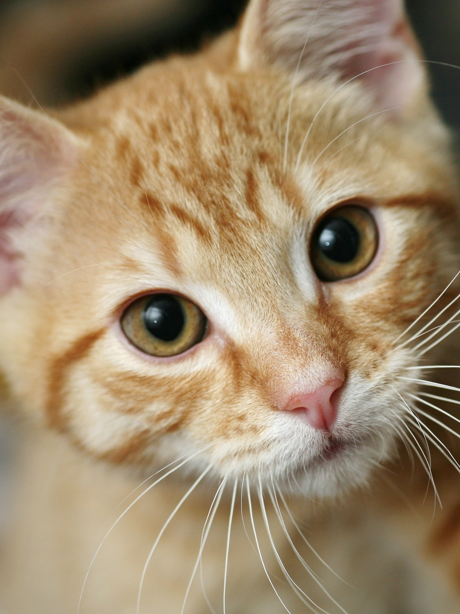
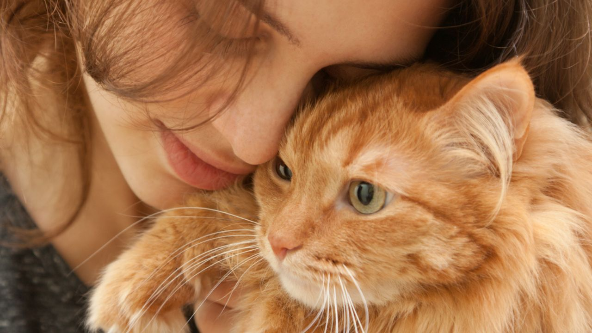

Curiosiade sobre Gatos
Você sabia que os Gatos reduzem o estresse, depressão e ansiedade?
Quer saber o por quê?

Os gatos, apesar de ficarem em casa, demandam menos trabalho para cuidar e são conhecidos por servir de suporte emocional para seus donos. São tranquilos, às vezes não ligam para visitas nem chegadas inesperadas, mas são fofos e dóceis.Com “lambeijos” e o rabinho abanando, eles são capazes de nos fazer liberar hormônios produtores da felicidade, como a serotonina, reduzindo o estresse, ansiedade e até mesmo a depressão.
